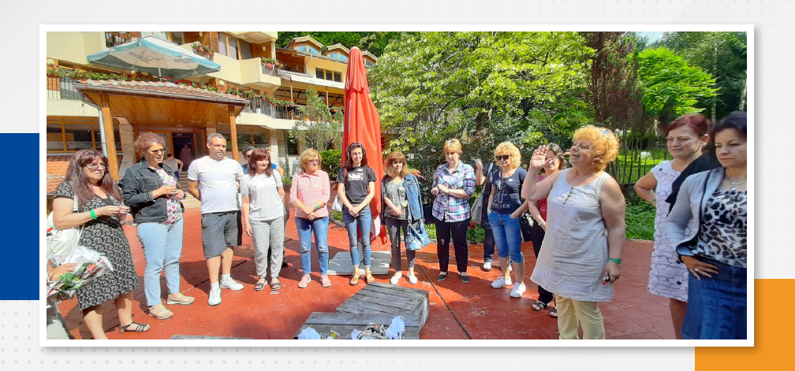

КВАЛИФИКАЦИИ
В ПГМЕЕ има изградена много добра, работеща система за планиране, организиране, координиране и контрол на квалификационните дейности на ниво училище. За определяне на потребностите от квалификационна дейност в ПГМЕЕ се използват различни методи за проучване желанията, нагласите и интересите на всички педагогически специалисти. Целта е създаване на условия всички учители да участват в работещи вътрешноучилищни форми на квалификационна дейност.
ПРЕДПОЧИТАНИ ФОРМИ НА КВАЛИФИКАЦИЯ СА:
• ОБУЧИТЕЛНИ СЕМИНАРИ;
• ЛЕКТОРИИ;
• ОТКРИТИ ПЕДАГОГИЧЕСКИ ПРАКТИКИ;
• ПРАКТИКУМИ;
• ТРЕНИНГИ;
• УЧАСТИЕ В РАБОТНИ СРЕЩИ, КОНФЕРЕНЦИИ И ДР.
Квалификационната дейност в ПГМЕЕ се подчинява на определени принципи и има строго специфични цели:
Създаване на атмосфера на подкрепа и стимулиране за прилагане на добрите практики по всеки учебен предмет в училище, изграждане на практики на „отворени класни стаи“.
Създаване сред учителите на нагласа за връзката на професионалното им усъвършенстване със стратегията за развитие на училището.
Създаване на условия за продължаваща квалификация на педагогическите кадри, популяризиране и обмен на иновативни педагогически практики.
Изграждане на училищна информационна система с данни за състоянието и квалификацията на педагогическите специалисти чрез поддържане, подобряване и актуализиране на електронен училищен регистър за квалификацията на педагогическите специалисти;
Поддържане на училищен архив с материали, свързани с всички теми и форми на проведени квалификационни дейности;
Изграждане на електронен формат на училищна база данни за структурата на
педагогическия персонал и кариерното развитие на учителите.
Подобряване на планирането, организирането, координирането и контрола на
квалификационните дейности в училище.
Всички педагогически специалисти да участват в работещи вътрешноучилищни форми на квалификационна дейност.
Да се популяризират и прилагат добрите педагогически практики по всеки учебен предмет в училище.
Да се създаде сред учителите разбиране за връзката на професионалното им развитие и усъвършенстване с издигането на авторитета на училището сред местната общност, региона и страната.
Да се създадат условия за осъществяване на контакти със сродни професионални гимназии с цел популяризиране на добри педагогически практики и повишаване качеството на професионалната подготовка на учениците.
От месец май 2021г. ПГМЕЕ е част от глобалната мрежа на „Училища за пример“ на фондация „Заедно в час“. Програмата е двугодишна и подкрепя училищата да разработват и прилагат устойчиви и ефективни практики за преподаване и управление на училището, които допринасят за успеха на всеки ученик. Тя се състои от две неразделни части: курс „Лидерство в училище“ и допълнителни курсове по избор на училището, свързани с различни методи на преподаване.
Целта на проекта е да се постигне хармония между:
● Академичните резултати на учениците;
● Тяхната саммоинициатива;
● Благополучието им в учебна среда.